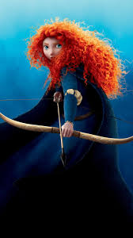

|  | BIOGRAFIA |
|---|---|
|
Merida é uma princesa corajosa e independente do reino de DunBroch, assumindo o papel de arqueira habilidosa e aventureira em sua própria história. Determinada, destemida e teimosa, ela busca trilhar seu próprio caminho, desafiando tradições e enfrentando perigos para proteger sua família e seu povo. Apesar de impulsiva às vezes, Merida demonstra crescimento constante, aprendendo a equilibrar liberdade e responsabilidade, sempre lutando pelo que acredita ser justo. | |
| ARMAS | |
|
Arco Real: Seu arco é sua arma principal, proporcionando disparos precisos e poderosos. Permite atingir alvos distantes com extrema eficácia, mesmo em situações difíceis ou perigosas. Habilidade e Reflexos Naturais: Merida possui mira excepcional e reflexos rápidos, tornando-a uma arqueira mortal sem depender de magia. | |
| Habilidades | |
|
HABILIDADES
Tiros Precisos: Acerta alvos a grandes distâncias com facilidade, sendo capaz de atingir pontos estratégicos e desarmar inimigos. Movimentação Ágil: Corre, salta e se esquiva com destreza, aproveitando terreno e obstáculos a seu favor. Estratégia e Proteção: Usa sua mira e posicionamento para proteger aliados ou criar oportunidades de ataque, sempre pensando no melhor desfecho para cada situação. |